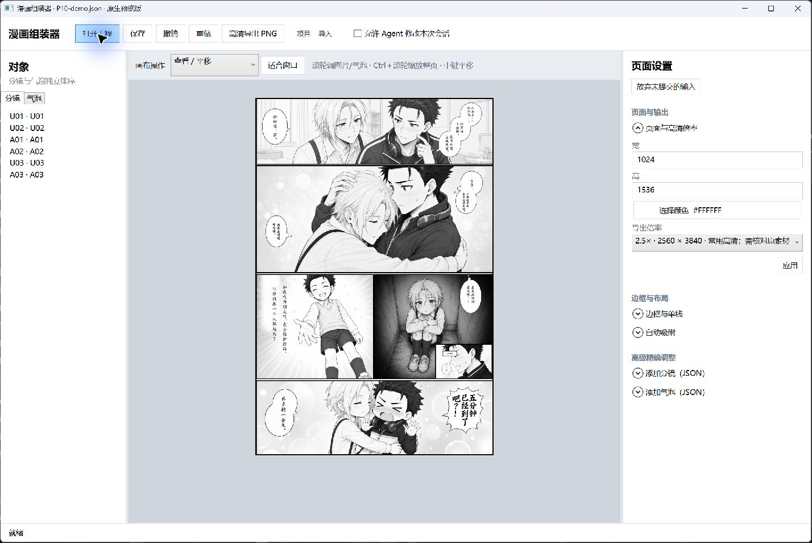
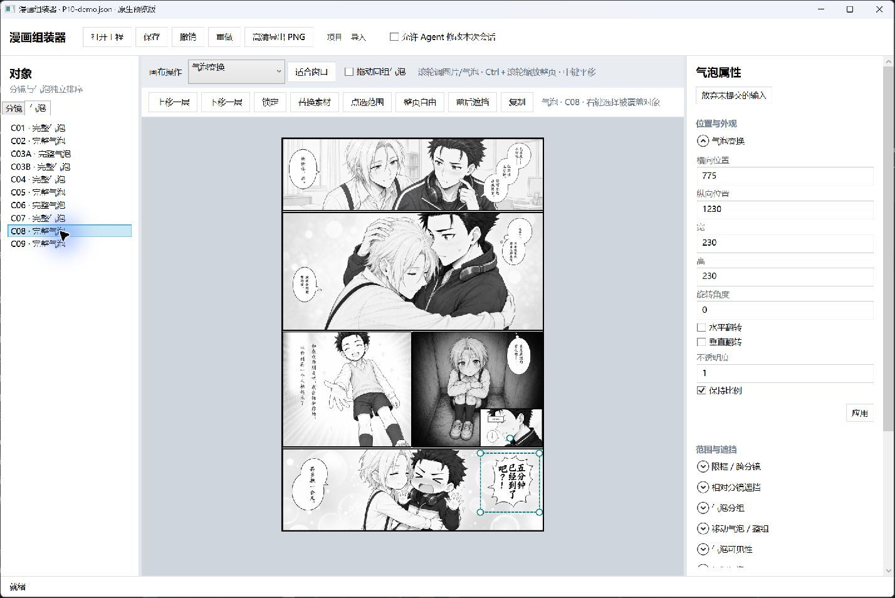
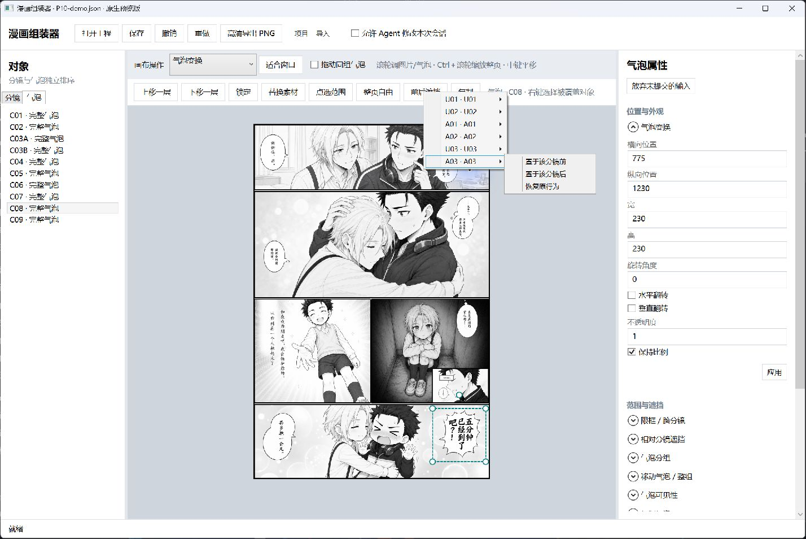
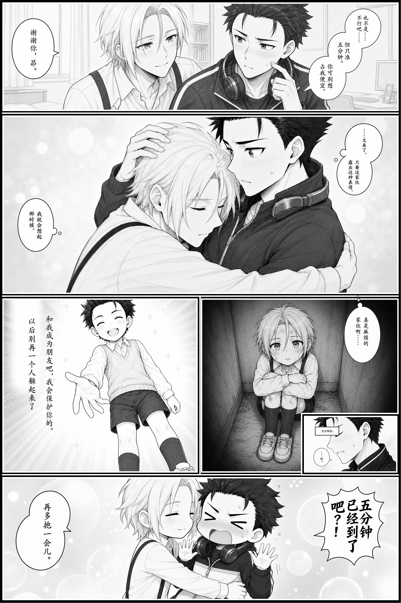

A ten-minute layout exercise
Extract the PanelLoom application folder and the case practice pack, keeping both folder structures intact. Double-click ComicEditor.exe, click 打开工程 (Open project), and choose P10/projects/reference.json from the practice pack. Use 项目 → 另存为 (Project → Save As) to create P10/work/working.json before making adjustments. Subsequent 保存 (Save) operations write to that working copy. This opens the creator's currently approved layout.
Work directly on the canvas
- Select a panel from 分镜 (Panels) on the left and switch to 图片取景 (Image framing). Drag its image on the canvas. Use the mouse wheel to scale that image while keeping the panel frame in place.
- Hold Ctrl and use the wheel to zoom the whole page. Use the middle mouse button to pan, and 适合窗口 (Fit to window) to restore the full-page view. The wheel in the right property sidebar only scrolls that sidebar.
- Switch to 顶点 (Vertices) or 边线 (Edges). Drag a control point or edge to adjust the panel shape. Source content outside the mask remains available for later reframing.
- In 气泡 (Bubbles), select C08, the explosive bubble reading
五分钟已经到了吧？！(roughly, “The five minutes are already up, aren't they?!”). Drag or scale it on the canvas and watch its relationship to the artwork. - Click 整页自由 (Allow across the page) to let the bubble cross panel boundaries. With 点选范围 (Pick clipping panel), click the target panel on the canvas to hide the part of the bubble outside that panel.
- Click 前后遮挡 (Front/back occlusion). Choose A03 in the panel menu, then 置于该分镜前 (In front of this panel) or 置于该分镜后 (Behind this panel). A cross-panel bubble can still be covered by an inset. The editor reports any layer adjustment needed for that relationship while preserving the relative order of other objects.
- Use 上移一层 (Move up one layer) or 下移一层 (Move down one layer) to change the order within the same object type. Each operation can be undone.
- Save your working file. Click 高清导出 PNG (High-resolution PNG export), choose a preset multiplier, check the displayed output dimensions, and save into
P10/output/.
Keep the initial and reference projects as fixed comparison points. Save edits in a separate working file. The P10 reference uses single-line borders and a 2× export, producing 2048×3072 pixels. The P09 reference also produces 2048×3072 at 2×. Higher multipliers render from complete assets; retain any source-resolution warnings.
Control names at a glance
The interface remains in Chinese. These labels match the controls shown in the screenshots:
| Visible label | English meaning |
|---|---|
| 打开工程 / 保存 | Open project / Save |
| 项目 → 另存为 | Project → Save As |
| 撤销 / 重做 | Undo / Redo |
| 分镜 / 气泡 | Panels / Bubbles |
| 图片取景 | Image framing |
| 顶点 / 边线 | Vertices / Edges |
| 适合窗口 | Fit to window |
| 点选范围 | Pick clipping panel |
| 整页自由 | Allow across the page |
| 前后遮挡 | Front/back occlusion relative to a panel |
| 置于该分镜前 / 置于该分镜后 | In front of / Behind this panel |
| 上移一层 / 下移一层 | Move up / down one layer |
| 高清导出 PNG | High-resolution PNG export |
| 允许 Agent 修改本次会话 | Allow Agent to modify this session |
Clipping and occlusion answer different questions: clipping controls where the bubble can appear; occlusion controls which overlapping panel covers it. Set both as needed. The Agent permission checkbox authorizes supported writes to the current editor session; ordinary manual adjustments do not require it.
Compare the results
The following screenshots were captured from an isolated initial practice project. They show the native preview's actual controls. The approved adjusted layout is shown further below.

Selecting an independent lettered bubble displays a control box that can be manipulated directly. The original asset remains intact.

Display range and panel occlusion are separate controls. The menu lists target panels and offers front, back, and restore-default choices.

reference-output/editor-reference.png is paired with projects/reference.json. It preserves the creator's approved framing, clipping, occlusion, panel positions, and export scale. projects/start.json preserves the historical initialization, so it can be opened separately to compare the Agent's initial placement with manual adjustments. historical-final.png preserves the original approved finished page.
| Initial layout | Adjusted reference layout |
|---|---|
 |
 |

P09 includes blank bubble assets for practice with positioning, cross-panel clipping, and occlusion. Use the case assets for local, non-destructive layout exercises and save results locally, under the asset terms.
Introduction · Full P10 workflow · Agent reference · Asset terms